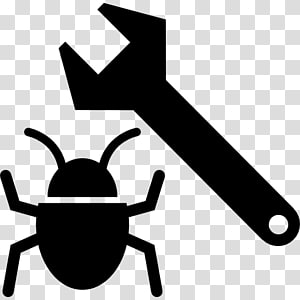

About Bug Tracking System

This defect tracking system helps to track bug. There are three modules in this tracking system, Administrator, Staff and Customer. The Administrator can login to the app and can enter the details of staff, project, view bugs send from the customers. The admin can also also assign work to staffs, view bug case flow status details, send messages to customers using this bug tracking application. The staff can login to the site using username and password. Then he/she can view the bugs assigned to them
He can directly give solution message to customers or he/she can assign the bugs to other staffs if the bug is related to them. The user may view bug case flow details with which he/she is involved. The customer registers in to the applications and login to the site using username and password. Whenever a bug is raised from his software, he sends the bug details to the administrator with print screen of the bug generated. He/she may see the bug case flow details and bug status along with remedy details at any time using the ticket number generated during new bug entry. This is how bug tracking can be done with this application.
Bug tracking system is essentially and effectively implemented to monitor the status of bugs in an application. All the bugs that are identified are stored in a database. Each bug is assigned with an unique bug id and respective status of bug. Bugs can be created and updated with ease. Specific user accounts to control the access and maintain security are incorporated into the application.
Bug tracking system which is implemented on Java provides an overview on standards of coding of the developers involved. Employee accountability can be tracked and analyzed on daily basis by using report generation option.
Note: If you want to back to home,press on "Back To Home"